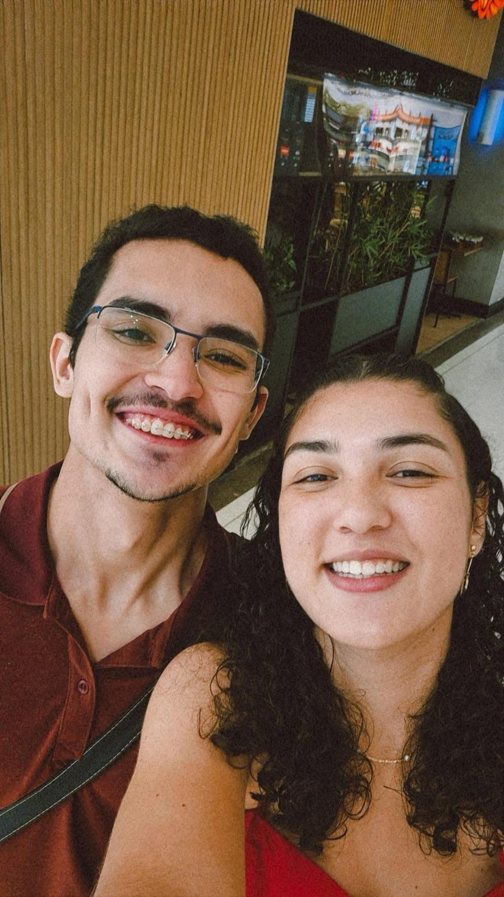

✦
Constelação
O que eu amo em você,
ano 2
Como você continua escolhendo a Deus primeiro, mesmo quando a vida pesa
O jeito como você cresceu esse ano e ainda assim continua tão você mesma
Sua paciência comigo nos dias em que eu não fui fácil de aturar
Cada conversa boba de madrugada que vira memória sem a gente perceber
Seu abraço, que continua sendo o lugar mais seguro que eu conheço
A certeza tranquila de que, depois de um ano, eu te escolheria de novo sem pensar duas vezes
☆
Álbum
Fotos do
segundo ano


← arraste para o lado →
✦
Cartas
Mês a mês,
nossa caminhada
Feliz 1.1, meu amor ❤️
Hoje a gente completa mais um mês da nossa história, e eu fico muito feliz só de parar pra olhar tudo que Deus tem permitido a gente viver. Sou muito grato pela sua vida, pelo seu carinho, pelas nossas conversas, pelos momentos simples e por ter você caminhando comigo.
Esse último mês me fez refletir bastante sobre nós. A gente viveu coisas lindas, mas também teve momentos em que algumas atitudes nossas acabaram nos afastando do propósito que Deus tem para um relacionamento. E eu não quero ignorar isso, porque eu amo você e quero que a nossa história seja construída da maneira certa.
Ontem, estudando Salmos 51:1-12, lembrei que Deus olha para um coração arrependido e disposto a mudar. Davi reconheceu os próprios erros e pediu a Deus que criasse nele um coração puro e renovasse o seu espírito. E é esse mesmo desejo que eu quero que a gente tenha: reconhecer quando erramos, buscar a Deus e permitir que Ele transforme a nossa caminhada.
Eu não quero que o nosso namoro seja guiado só pelo que sentimos, mas pelo amor, pelo cuidado, pelo respeito e pelo propósito que Deus tem para nós. Quero aprender a amar você cada vez melhor, cuidar do seu coração e caminhar ao seu lado buscando honrar a Deus.
Obrigado por esse um ano e um mês. Obrigado por cada momento, cada risada, cada conversa e por tudo que a gente construiu até aqui. Que esse novo mês seja um recomeço, com mais sabedoria, mais maturidade e com Deus no centro da nossa história.
Eu te amo muito ❤️
Hoje a gente completa mais um mês da nossa história, e eu fico muito feliz só de parar pra olhar tudo que Deus tem permitido a gente viver. Sou muito grato pela sua vida, pelo seu carinho, pelas nossas conversas, pelos momentos simples e por ter você caminhando comigo.
Esse último mês me fez refletir bastante sobre nós. A gente viveu coisas lindas, mas também teve momentos em que algumas atitudes nossas acabaram nos afastando do propósito que Deus tem para um relacionamento. E eu não quero ignorar isso, porque eu amo você e quero que a nossa história seja construída da maneira certa.
Ontem, estudando Salmos 51:1-12, lembrei que Deus olha para um coração arrependido e disposto a mudar. Davi reconheceu os próprios erros e pediu a Deus que criasse nele um coração puro e renovasse o seu espírito. E é esse mesmo desejo que eu quero que a gente tenha: reconhecer quando erramos, buscar a Deus e permitir que Ele transforme a nossa caminhada.
Eu não quero que o nosso namoro seja guiado só pelo que sentimos, mas pelo amor, pelo cuidado, pelo respeito e pelo propósito que Deus tem para nós. Quero aprender a amar você cada vez melhor, cuidar do seu coração e caminhar ao seu lado buscando honrar a Deus.
Obrigado por esse um ano e um mês. Obrigado por cada momento, cada risada, cada conversa e por tudo que a gente construiu até aqui. Que esse novo mês seja um recomeço, com mais sabedoria, mais maturidade e com Deus no centro da nossa história.
Eu te amo muito ❤️
Com muito carinho e amor,Matheus ❤️